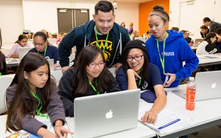

Worked with my partner to classify songs by feature vectors in Scikit-Learn for Python
Created a content-based artist classification methodology that can differentiate an individual artist’s pseudonyms from each other using features extracted from audio signals using Librosa
Achieved average recall and precision scores of above 80% in a dataset of 480 audio files
Meownorail
SJSU Introduction to Game Studies - Spring 2017
Single-handedly created a competitive video game using GameMaker Studio 1.4
Drafted multiple prototypes to hear feedback from peers: gamers and non-gamers alike
Implemented knowledge, skills, and techniques learned from design course to studies course
Semantic Search Engine
SJSU Database Management Systems II - Spring 2017
Project parses through IEEE articles related to Big Data and grabs emails of authors
Lead a four-person group to wrangle data from across three years of scientific articles
Updated the speed of the algorithm by turning a taxing comparison into a quick read from table

CyberGirlz Capture the Flag Pilot
SJSU Student Technology Ambassador Program - Spring 2016
Collaborated in a team of five to determine possible solutions for the STEM Center’s CyberGirlz faculty/staff to create and sustain a Capture the Flag summit for middle school girls
Presented our proposal to an audience consisting of peers and liaisons from local organizations
Successfully used the Agile process to collaborate effectively and create a Case Study Document